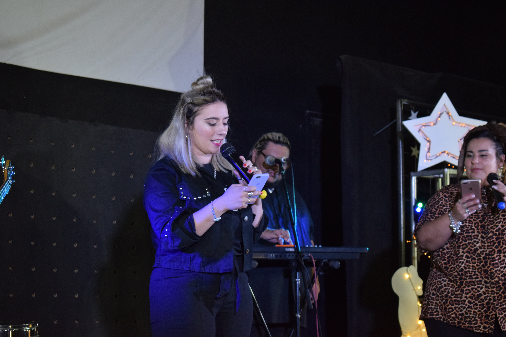
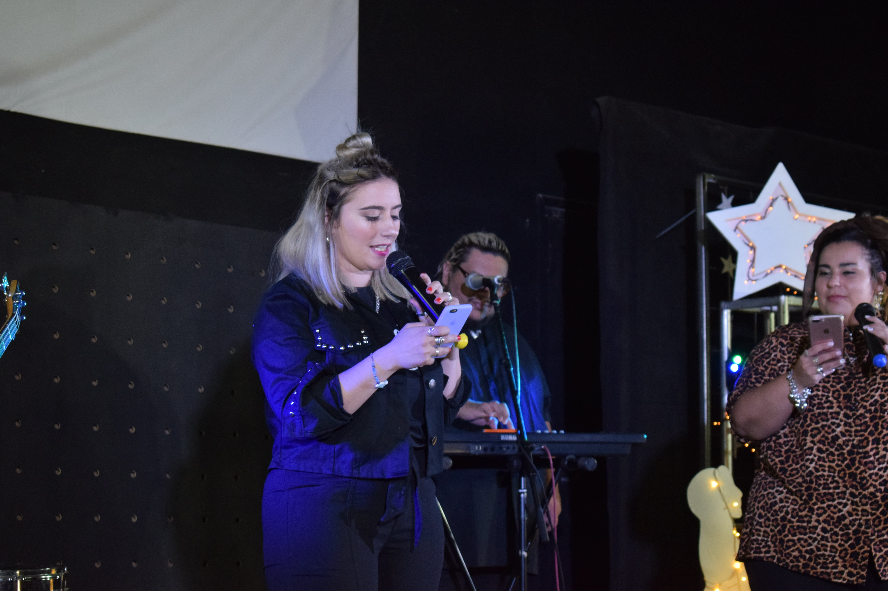

Genomas
Genomas es el nombre que le hemos dado al grupo de preadolescentes y adolescentes. Así como en la ciencia el genoma es fundamental para el funcionamiento celular, creemos que los adolescentes son esenciales para esta sociedad y la expansión del evangelio.
 


Red de jovenes
La Red de Jóvenes está conformada por jóvenes de 18 años en adelante. Todos los viernes a las 21hs los jóvenes se reúnen para compartir un tiempo de adoración, búsqueda y reflexión de la palabra de Dios. Nuestro deseo es que cada jóven pueda comprender su propósito en Dios, motivarlo a crecer espiritualmente y ayudarlo a ser luz en medio de los suyos.
Red de niños
La Red de niños es un espacio creado para cada uno de los niños, dónde los instruimos en la palabra de Dios y les enseñamos de forma práctica valores que le servirán para ser luz y sal no solo en el futuro, sino también en el presente. Funciona todos los domingos en el horario de la reunión. Si querés que tus niños sean parte, escribinos y nos pondremos en contacto.

Calle 27
Calle 27 surgio en una calle del centro llamada por ese nombre, este grupo se formo para ayudar a la gente en situcion de calle repartiendo un cafe o una simple charla , pero tambien compartimos un pcoo de lo que Dios puede hacer en sus vida y le damos una palabra de aliento